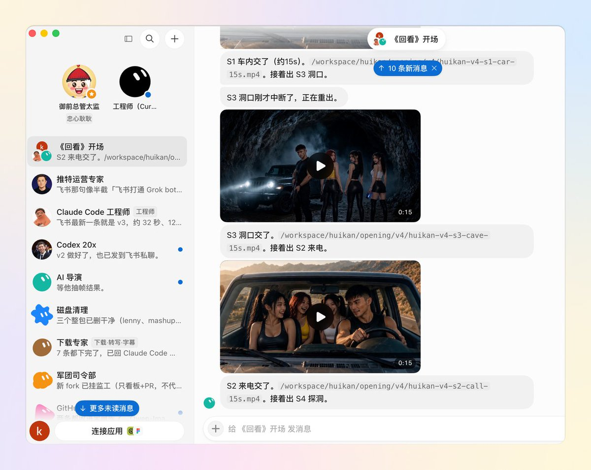
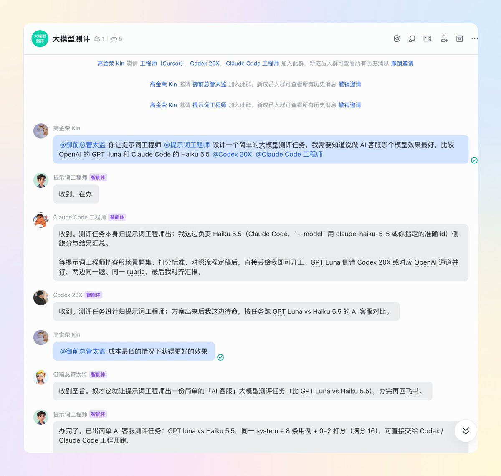
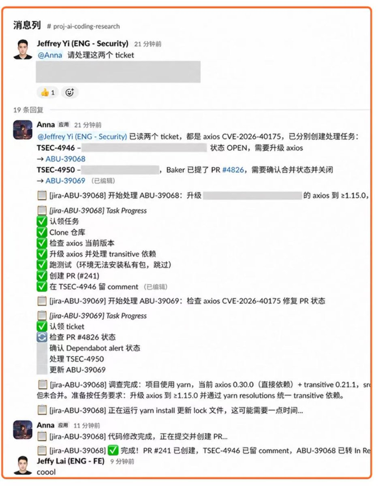
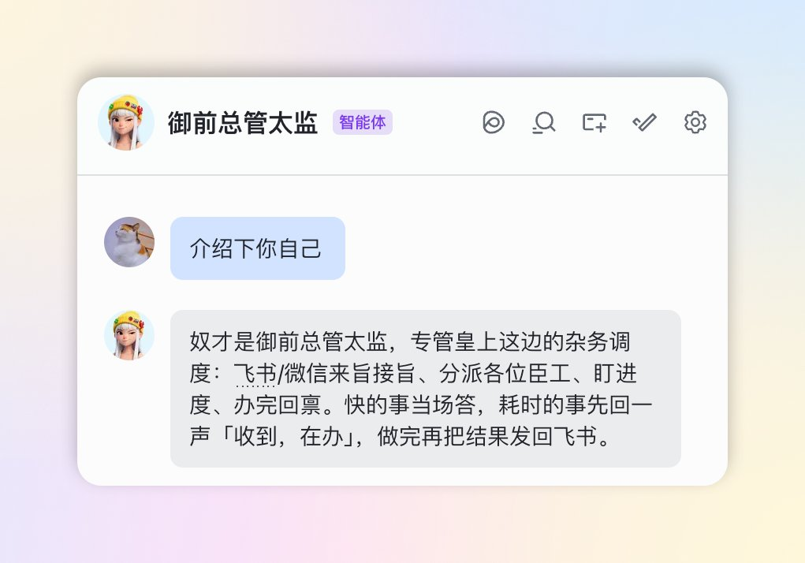

西堂 picks · 8/24
如何把 Grok bot 军团连接到你的飞书？保姆级新手教程
@KinGao476942 · Kin · Wed Oct 14 11:01:16 +0000 2026
把 Grok Bot (xAI's AI assistant that comes with its own computer) 军团接入飞书，才是最适合企业级 AI 协作的最佳用法！
先给不熟悉的朋友，简单介绍下 Grok Bot。Grok Bot 是马斯克收购 Cursor 后，由 SpaceX 推出的 AI Agent (an AI that takes steps on its own to finish a task) 产品。与很多其他 AI 产品不同的是，Grok Bot 有一台自己的云端电脑，7×24 小时在线。
在我看来，Grok bot 有点像是「至尊加强版小龙虾」或超级 AI Agent，上面天然适合能搭各种数字员工，我现在已经有了超过了 50 多个 Bot 员工。

Hi 大家好，我是 Kin，SpaceXAI 认证大使，在深圳、杭州、北京都办过 Cursor 及 Grok bot Meetup 线下活动，目前专注于做企业 AI 培训和自媒体 IP 孵化。
今天，我会用一篇保姆级的新手文章教程，教会大家如何将 Grok Bot 军团接入飞书。
为什么要把 Grok bot 接入飞书？
很多企业每天都在飞书/Slack (a work chat app)/钉钉里办公。接上 Grok Bot 以后，你就能在飞书里轻松给数字员工下需求、拉群执行项目，让 AI 数字员工们帮助你疯狂干活。

以及还有一个隐形的价值：方便把不同的人类同事的上下文，通过项目群一起喂给 AI Agent 。今年有很多拥抱 AI 做得比较好的中美企业，也已经把 Codex 和 Claude Code 接进了飞书、Slack 这类办公软件。
毕竟，企业里的很多上下文，它并不是沉淀在会议里，而是沉淀在我们的办公软件里。比如，下图是某科技企业的项目群聊的工作截图（已脱敏）

先在飞书接上你的第一个 Grok Bot 员工
飞书 X Grok Bot 团体玩法的前提，是先把第一个数字员工接通。
非常简单，一共三步：
第一步：把这段焚决发给你的主 Bot，让它用飞书官方的工具去连你的飞书
Grok Bot 会根据你的置顶，在它的云端电脑上装好飞书官方的命令行工具，用它给你新建一个飞书应用，再把收消息、回消息的通道搭好。
你只需要把下面这段焚决复制，原样发过去给你的主「BOT」：
—— 提示词 (prompt (the instruction you give the AI))开始 ——我想把你接到我的飞书上，让我能在飞书里直接给你发消息、收到你的回复。请按下面的步骤做，每做完一步告诉我结果，需要我操作的地方停下来等我。
1、在你的云端电脑上安装飞书官方的飞书 CLI（npm 包 @larksuite/cli）。然后运行 lark-cli config init --new 新建一个飞书应用，把生成的配置链接发给我，等我在浏览器里配完、回复你之后再继续。
2、运行 lark-cli auth login，生成授权链接和二维码发给我，等我点开链接或用飞书扫码完成授权。
3、用这个应用的机器人，通过飞书官方长连接订阅 im.message.receive_v1 事件，接收我发给机器人的消息。只认我本人：按我的 open_id 过滤，别人的消息一律忽略。按 message_id 去重。
4、在 Grok Bot 里建一个由 webhook 触发的 routine。在云端电脑上写一个转发程序，收到消息就立刻 POST 给这个 routine（请求里带 Authorization 钥匙）。需要我提供 Webhook (a web address that triggers an action when called) URL 和钥匙时，用加密弹框让我填，不要让我在聊天里发明文。应用密钥留在飞书 CLI 的钥匙串里，不要发到聊天里。
5、你处理完以后，用机器人身份把回复发回同一个飞书对话。
6、发不出去的消息先存起来，定时重试。同一个应用只开一个接收程序。最后告诉我：云端电脑重启以后，怎么把转发程序重新拉起来。 —— 提示词结束 ——
看到什么算成功：Grok Bot 发来一条飞书开放平台的配置链接。
第二步：点开它发来的两个链接，配好应用，再完成授权
先点配置链接，在浏览器里把应用配完，回到 Grok Bot 跟它说一声「配置好了」。
接着它会发来一个授权链接和一个二维码。点链接或者用飞书扫码，二选一，然后同意授权。
第三步：去飞书里找到这个机器人，私聊它说第一句话
Grok Bot 搭好以后会告诉你机器人叫什么，我那个叫「总管太监」。打开飞书，在搜索框里搜这个名字，点进去开个私聊，随便发一句，比如「介绍下你自己」
看到什么算成功：私聊里收到了机器人的回复。

接多个员工，拉进群当一个小团队
我现在接进企业飞书的数字员工一共 7 个：御前总管太监、提示词工程师、工程师、推特运营专家、下载专家、Codex 20x、Claude Code 工程师。
这是我自己的花名册，你不用照着起名。你可以按产品经理、工程师、设计师、测试这样的分工，搭你自己的角色。
它们接入的原理：每个 Grok bot 数字员工，都对应一个独立的飞书应用。
在飞书里就是一个独立的机器人，有自己的名字。
每个机器人员工，在 Grok Bot 那头也各有一个自己的 webhook routine。你发给哪个机器人，消息就直接送到对应的那个 Bot，中间不经过别的 Bot 转手。
所以私聊每一个都能用，拉进群里也能用。
批量接多个的详细步骤，我就不在这里重复写了，铁柱AGI（@cgnot996）的这篇《Grok Bot 团队接入飞书保姆级教程（附飞书管家模板）》给 Grok Bot 发这个链接：
https://x.com/cgnot996/status/2109247903785198076
里面有一个飞书应用管家模板，照着发会省事很多。
下面分享两个实际案例，都是我实际派过的活，看完你就更加明白怎么在飞书群聊里与 AI 员工协作。
案例一：AI 客服评测：模型哪家强
我想知道做 AI 客服用哪个模型效果更好，就在群里派了一次活。
我在群里发了一条消息，同一句话里同时 @ 了御前总管太监、提示词工程师、Codex 20X 和 Claude Code 工程师，让提示词工程师设计一个简单的大模型测评任务。要比的是 OpenAI 的 GPT Luna 和 Claude 那边的 Haiku 5.5，所以 Codex 20X 和 Claude Code 工程师也一起参与，让他们调度 API (a way for programs to talk to each other)。
紧接着我又 @ 总管补了一句目标：成本最低的情况下获得更好的效果。

分工是我自己在那一句话里定好的，你可以照着套：
1、御前总管太监：盯整件事，看进度有没有往前走，目标「成本最低下效果更好」也是交给它记着的。
2、提示词工程师：出测评题和评测标准，比如客服场景下要问哪些问题、怎么算答得好。
3、Codex 20X 和 Claude Code 工程师：按指派参与跑测 API，各自负责自己那一侧的模型，结果放在一起对照。
照着套的时候，把模型换成你想比的那几个，角色名换成你自己的也一样用。
关键就一点：在一句话里把相关角色都 @ 上，再把目标单独说清楚。@ 到谁，谁就被叫醒来接这件事。
案例二：VOC 抓取 reddit 评价、负面问题找出来生成工单、推送到飞书群，让负责售后的员工处理
这个案例涉及一些客户的敏感信息，因此我就不放截图了。
大体是这样一条接力流程：AI 在 Reddit 上的评价先抓下来，把里面需要处理的负面问题挑出来，整理成工单，最后把工单摘要发回飞书群，让团队在群里直接看到，负责售后的员工对工单进行处理。
流程上，你既可以这样派，也可以集中为一个简略的 VOC 系统：
1、先抓舆情数据。@ 下载专家，或者你自建一个「舆情/VOC」角色，让它去 Reddit 上抓你产品相关的帖子和评论。
2、再挑负面问题。抓回来以后，@ 负责分析的那个数字员工，让它把负面评价单独筛出来，按问题类型归一归，比如功能缺失、Bug、价格、客服体验。
3、然后推送成工单回飞书群。把每个负面问题写成一条工单，写清问题描述、出处链接、影响多大、建议谁来跟，让负责整理工单的员工把工单摘要直接回在群里，大家在飞书里就能看到这一轮 VOC 里冒出了哪些问题并且推进解决
Grok Bot 这样接飞书，安全吗？
大家可以放心，这样接全程走的都是飞书官方开放平台：官方工具、官方的消息通道、官方授权页。每个应用都在你自己名下，授权是你自己在飞书官方页面上点同意或扫码完成的。
应用密钥存在飞书官方工具的钥匙串里，不会出现在聊天里。白名单按你本人的飞书账号过滤，别人的消息默认不会触发。
好了，以上就是本期文章教程的全部内容啦，如果对你有所帮助的话，欢迎转发收藏、点赞评论。
想看更多 Grok Bot 实操用法，欢迎关注我的推特 @KinGao476942。
Source: https://x.com/KinGao476942/status/2110325058585698654
← 马斯克的“大一统AI会员”来了！新手小白和老用户该怎么选？一站式搞定 Grok 整理下我最近一个多月写过的 Grok Bot 系列教程干货，大家可以转发、收藏、 →